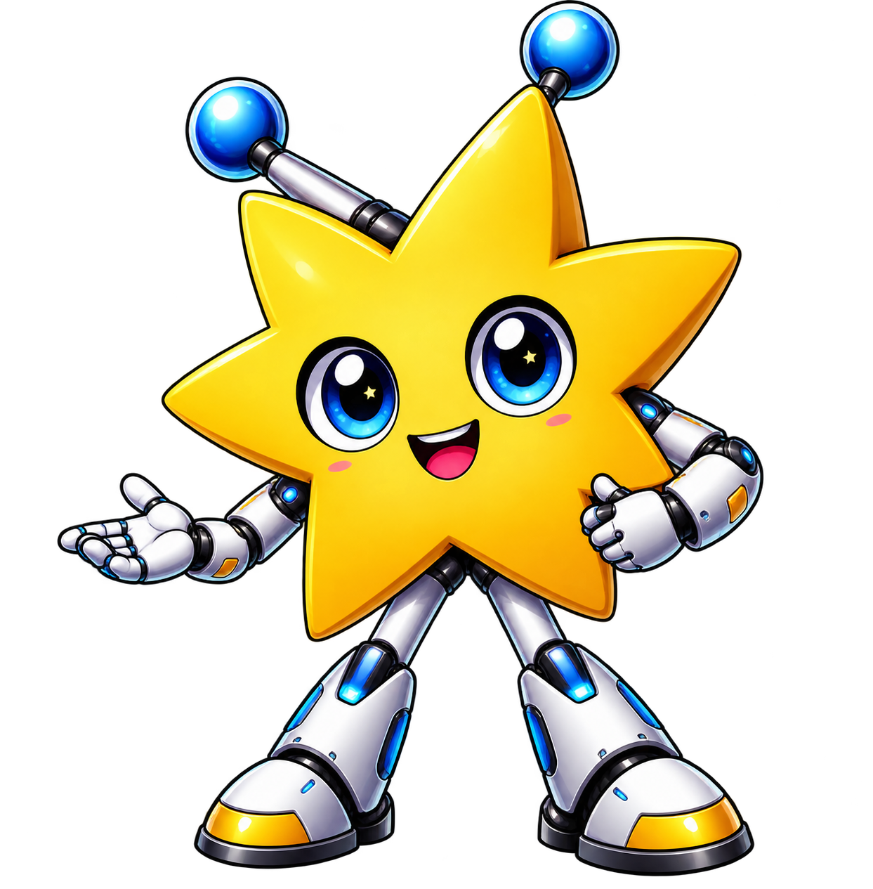
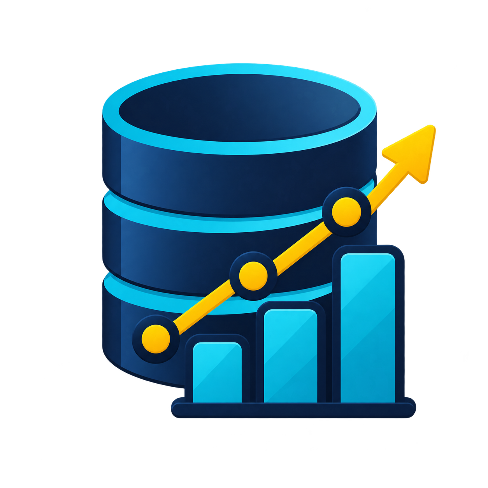

Tecnologia parece um Labirinto
A Lumi pode ser sua estrela guia que te mostra o caminho.
O Do Zer0 ao Tech reúne carreiras, conteúdos, ferramentas e cursos para ajudar você a dar os primeiros passos. Descubra quais áreas combinam com seu perfil e comece sua jornada no seu próprio ritmo.


Oi! Eu sou a Lumi!
Eu sei que entrar no mundo da tecnologia pode parecer um pouco confuso no começo. Tantas áreas, linguagens, cursos... por onde começar?
É justamente para isso que eu estou aqui! Preparei um mapinha com os primeiros passos para te ajudar a encontrar um caminho, descobrir o que aprender e chegar até o seu primeiro projeto.
Vem comigo? Eu te mostro o caminho.
Entenda seu caminho conosco
Dar os primeiros passos na tecnologia pode parecer desafiador diante de tantas possibilidades, mas você não precisa caminhar no escuro. Desenhei um roteiro prático e estruturado para guiar você desde a descoberta inicial até a construção das suas primeiras experiências profissionais. Siga o mapa no seu próprio ritmo clicando nas bolinhas:
Descubra uma área que combina com você
Ainda está em dúvida? Faça o questionário de afinidade e encontre caminhos relacionados aos seus interesses.
Prefere explorar livremente?
Conheça Desenvolvimento, Dados, Segurança e IA e entenda o que cada área faz.
Conheça as possibilidades de carreira
Veja como é a rotina profissional, quais habilidades são importantes e onde cada caminho pode levar.
Encontre por onde começar a estudar
Compare cursos gratuitos e pagos selecionados para quem está começando.
Transforme conhecimento em experiência
Crie seu primeiro projeto, desenvolva suas habilidades e comece a construir seu portfólio.

Qual área de tech combina com você?
A tecnologia está cheia de oportunidades, mas você sente dúvida sobre qual caminho seguir? O nosso Questionário de Afinidade foi criado exatamente para te ajudar a dar esse passo com confiança, clareza e sem complicação.
Como funciona?
Responda
Escolha as alternativas que mais combinam com você.
Descubra
Suas respostas serão analisadas para encontrar as áreas mais compatíveis com seu perfil.
Explore
Conheça as áreas indicadas e descubra onde você pode começar sua jornada na tecnologia.
Prefere não fazer o questionário de afinidade?
Explore as áreas e descubra as possibilidades no seu ritmo.

Desenvolvimento de Software
Crie sites, sistemas e aplicativos utilizando linguagens de programação, bancos de dados e tecnologias modernas para desenvolver soluções digitais inovadoras.
Realizar essa trilha
Área de Dados
Transforme grandes volumes de dados em informações estratégicas utilizando análise, estatística e programação para apoiar decisões inteligentes.
Realizar essa trilha
Segurança da Informação
Proteja sistemas, redes e informações contra ataques cibernéticos, vazamentos de dados e acessos não autorizados por meio de boas práticas.
Realizar essa trilha
Inteligência Artificial
É uma tecnologia que permite máquinas simularem a inteligência humana, aprendendo com dados, reconhecendo padrões e tomando decisões de forma autônoma.
Realizar essa trilha